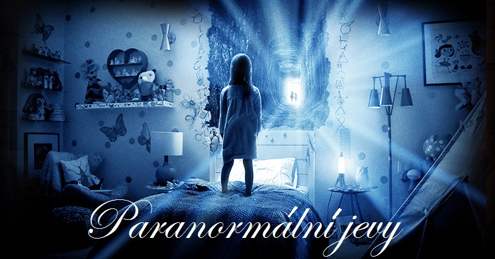
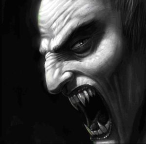

Úvod
Paranormálním jevem se nazývají skutečnosti, pro které není známo racionální vysvětlení. Paranormální jevy jsou často pro svou mohutnou iracionální složku kontroverzním tématem.
Existují různé pokusy o vysvětlení paranormálních jevů, například:
1. Jde o lidské halucinace způsobené působením (atmosférou) místa např. opuštěný dům nebo hrad.
2. Jedná se o lidmi nastražené pasti, které mají za úkol odlákat ostatní od věcí nebo tajemství která se zde ukrývají. Zajímavým příkladem je fáma o havárii UFO v roce 1947 v Roswellu, kolem které vznikla doslova mytologie o mimozemských návštěvnících. Ve skutečnosti byla fáma rozšířena americkou armádou za účelem utajení vojenského projektu Mogul, který měl monitorovat případné raketové aktivity Sovětského svazu.
Výzkumem paranormálních jevů se ve světě zabývá celá řada nadšenců, hlavně z řad esoteriků. Například TAPS (The Atlantic Paranormal Society) či IPA (Indian Paranormal Society). I v České republice můžeme takové najít. Mezi populární v České republice patří tým VTPJ (Vyšetřovací Tým Paranormálních Jevů). Z esotericky zaměřených skupin to je například EPRV777 léčitele Jaroslava Drábka. Z objektivněji zaměřených jde o spolek Paranormal tým z.s. založený Ondřejem Bezouškou.
Vědecký výzkum paranormálních jevů
Celoevropská výzva ke spolupráci.
Dne 1. října 2012 vyhlásili belgičtí skeptici ve spolupráci s evropskou skeptickou společností ECSO soutěž “The Sisyphus Prize” o jeden milion euro. Finanční odměnu zde mohla získat osoba, která prokáže za kontrolovaných podmínek paranormální schopnosti, resp. takové, které jsou podle současných vědeckých poznatků krajně nepravděpodobné. V Belgii, Holandsku, Německu, Polsku i jinde byla o této akci široce informována veřejnost v rozhlase i v tisku, a první přihlášky k testování byly zaregistrovány velmi brzy. Tento projekt byl mimořádný kromě historicky nejvyšší vypsané odměny hlavně tím, že se jednalo o první celoevropskou akci zaměřenou na hledání paranormálního jevu. Česká republika se do projektu zapojila 1. ledna 2013 prostřednictvím Českého klubu skeptiků Sisyfos (člena Rady vědeckých společností České republiky) ve spolupráci s mentalistou Jakubem Kroulíkem.
Možnost otestovat své paranormální schopnosti v rámci národního pretestu českým zájemcům končila po půl roce. Důvodem dřívějšího konce nabídky o národní pretest bylo, aby v případě úspěchu národního kandidáta bylo dost času pro přípravu a realizaci finálního testu v Bruselu.
V České republice se národní výzvy pořádané Českým klubem skeptiků Sisyfos nakonec zúčastnili dva lidé. Pokusili se prokázat schopnost mimosmyslově vnímat, neuspěl však ani jeden.[2] V dalších evropských zemích během jednoho roku trvání akce proběhly desítky testů různých paranormálních schopností v oblastech jako je jasnovidnost, telepatie, telekineze, materializace, proutkařství, senzibilských schopností, psychotroniky apod. Výsledek žádného z testovaných účastníků dosud nepřekročil stanovený pravděpodobnostní poměr, tudíž žádný z nich dosud neuspěl.
charakteristiky upírů a vampirismus
manifest - definitivní průvodce problematikou upírů, shrnutí faktů
Kdokoliv se může stát expertem na upíry. Neprohlašuji se za žádného experta, jen nabízím fakta taková jaká jsou. Pravý vědec předkládá své zdroje. Já nejsem pravý vědec.
Jediné co je třeba udělat je vytáhnout hlavu z písku a trochu se rozhlédnout, co se děje. Je 21. století, zapomeňte na Van Helsinga. Nemusíte nosit viktoriánské šaty, monokl a sadu k zabíjení upírů obsahující kůly a svěcenou vodu, abyste byli experty. Nemusíte žít v jejich světě. Nepotřebujete staré knihy a manuskripty. Upíři sami dnes používají iPady, tak proč bychom se měli my utvrzovat ve svých podezřeních honbou za starými svitky?
Vše co potřebujete je mít info z první ruky, protože cokoliv jiného bude definitivně zkreslené, ať už úmyslně nebo z jiných důvodů. Z první ruky znamená vidět a/nebo mluvit s upírem. V ten moment máte víc informací, než drtivá většina populace, což z vás automaticky udělá experta více než cokoliv jiného.
Vampirismus
Vampirismus není magie, není to nemoc a není to ani retrovirus. Nevím co přesně to je, ale jsem si jistý, že to má co do činění se změnami genetického kódu.
Mrtvý je mrtvý, konec. Pokud v žilách neproudí krev a v mozku neprobíhají elektrické signály, život přestává existovat. Upíři nejsou mrtví. Není to snad tak těžké pochopit, když známe desítky druhů živočichů živících se výhradně krví (pijavice, komáři, klíšťata, upíři, …) a stejně tak známe živočichy, kteří projdou kompletní transformací, metamorfózou (motýli).
Lidské tělo je jedním z nejsložitějších biologických organismů v přírodě. To umožňuje nejen spoustu variabilních použití, ale také, jak to s komplexností často bývá, nechává mnoho prostoru pro změnu. Jediný podstatný rozdíl, který vás nyní odlišuje od upírů, je pouze absence rychlé-až-okamžité regenerace buněk, která znamená velmi rychlé hojení, potažmo nesmrtelnost. Samozřejmě, upíři jsou nyní mnohem víc, ale pokud se alespoň trochu zajímáte o fungování evoluce tak víte, že příroda se nepřizpůsobuje svým obyvatelům, ale naopak obyvatelé musí přizpůsobit své potřeby a schopnosti možnostem a potřebám prostředí ve kterém žijí. Stejně jako se u lidí vyvinula řeč, tak se u upírů mohly vyvinout tasivé špičáky… které se mimochodem v přírodě vyskytují mnohem častěji než řeč.
Poznámka: Následující seznam nemusí být v detailech úplně přesný. Ono není úplně v jejich zájmu aby nějaký takový seznam existoval, viz předchozí část, nicméně uvítáme bude-li někdo ochoten cokoliv upřesnit. Snad ale nemusíme zdůrazňovat, že popkultura není nejvhodnějším zdrojem.
Charakteristiky upírů
Upír má sílu dvaceti mužů, ať už se jedná třeba o ženu nebo dítě. Síla upíra záleží na mnoha faktorech.
Nejdůležitějším je, jakým způsobem byl upír přeměněn. Podrobnosti jsou rozepsány dále.
Druhým nejdůležitějším faktorem je pokrevní linie.
Dále je velice podstatný věk.
Upírova síla také záleží na objemu svalů. Velký svalovec bude silnější než dítě, avšak to se stane zcela nepodstatným, je-li onen štíhlý mladík výrazně starší, nebo pochází-li z nadřazenější pokrevní linie.
Už méně podstatné, je jak často se upír krmí, a jakým druhem krve (někteří lidé mají pro upíry vydatnější krev, než jiní).
Krátkodobě jeho sílu ovlivňuje i jak moc se vystavuje slunečnímu světlu.
Hlavní stravou upírů je lidská krev. Mohou se bezpečně stravovat i zvířecí krvi, ta pro ně ale často nemá potřebnou nutriční hodnotu především proto, že jídelníček zvířat je odlišný od lidského. Krev lidí a savců, u které červeným krvinkám chybí buněčná jádra je vydatnější než jiných druhů. Krev některých druhů dobytka a vysoké zvěře vykazuje značné mutace erytrocyt, což znesnadňuje její stravitelnost.
Pohled na krev upíra nijak nepovzbudí, nerozčílí ani neodhalí, pokud není vážně opravdu hladový. Umí se ovládat stejně jako vy, často mnohem lépe. Upírova chuť na krev je podobná jako lidská žízeň, nebo hlad. Rozhodě se mu neodhalí zuby ani mu neztmavnou oči, když se před ním říznete.
Upírova síla se promítá také v rychlost jeho pohybů. Zvládnou bežet velmi rychle a velmi dlouho bez zastavení; sprintují ještě mnohem rychleji, ale pak potřebují odpočinek. Běžící upír ale není rychlejší než oko, nevypadá jako šmouha, ani se nepřiblíží rychlosti zvuku. Je mnohem rychlejší než člověk, ale nic co by se blížilo fyzikálním limitům. Potřebuje-li získat skutečně velkou rychlost, kombinuje běh s malými přískoky, jako např. gepard (najděte si video ať víte jak to vypadá) ale samozřejmě nikoliv na všech čtyřech. Zvládnou vyskočit mnohem výše než člověk, ale to jen díky své síle, pružným svalům, poddajnému a lehčímu tělu, a také typicky díky tréninku. Opravdu nedokáží létat.
Kardiovaskulární systém upíra je výrazně odlišný od lidského. Jejich tepny a žíly nejsou tím, co rozvádí hlavní krevní těleso, ale narozdíl od lidí mají několikanásobně hustší síť kapilárních cév protínajících orgány a svaly. Převážná část krve jim proudí těmito cestami, což je jednou z hlavních příčin odolnosti proti zranění. Stažení svalů v poraněném místě okamžitě zastaví krvácení a rychlé hojení udělá zbytek.
Za normálních podmínek upíři ve tmě nevidí výrazněji lépe než člověk. Jakmile však zaujmou útočnou nebo obrannou pozici (nebo se na někom chystají nakrmit), jejich zornice se značně rozšíří a dostanou červený nádech (zřejmě četná drobná poškození kapilár duhovky). Takto extrémní dilatace dovolí dopadnout na sítnici mnohem většímu množství světla a doslova z nich udělá noční predátory. Podobně jako u těchto, abnormálně rozšířené zornice jsou důvodem proč se v jejich očích v noci zrcadlí každý sebemenší odlesk.
Upíří čich i sluch je lepší než lidský, ale jen do té míry co fyziologie dovolí. Nenaroste jim extra pár ušních bubínků ani nové čichové buňky, jen dokáží využít stávající na maximum, ať už je to hojivými schopnostmi nebo jejich genetickými změnami. Lidé nevyužívají svůj sluch ani čich na maximum, vlastně nevyužíváme na maximum žádný ze svých smyslů nebo schopností. Upíři to dokáží, ale ne napořád. I upíra zaskočíte nepřipraveného, například na slunečním světle, kde preferují koncentrovat své síly do obranných smyslů.
Kříže, svěcené vody, česneku ani stříbra se upíři nebojí ani je neodpuzují. Jsou to jen mýty a výmysly. Stejně jako neublíží vám, neudělají nic ani upírům. Stejně tak neexistuje žádná rostlina, která je mohla zabít, oslabit či zviditelnit. Ani sporýš, ani oměj vlčí mor. Některým chutná měsíček (Calendula officinalis). Netuším proč.
Jediný důvod proč upíra odpuzují kříže a náboženské symboly může být ten, že upíři jsou alergičtí na hloupé kraviny.
Jediné co upírům vadí na česneku je jeho tendence odrážet se v nahořklé příchuti krve, pokud ho sníte hodně. Stejně jako u člověka dokážete poznat, že minulou noc pil, protože jeho póry prostupují typické pachy, stejným způsobem upíři cítí česnek (ale nejen ten). Obvykle jim moc nevoní. Ale zcela určitě před ním neutíkají, ani je jeho konzumace nezabije, a mají-li hlad, je úplně jedno kolik česneku právě žvýkáte.
Upír se nemůže opít, nadrogovat nebo otrávit. Souvisí to s jejich schopností rychlého léčení, rychlého vypuzení nebo neutralizace špatných látek. Nezáleží na množství, nebudou mít efekt. Stejně tak nemoci. Z části je to dáno opět rychlým léčením, z části pak rozdíly mezi lidmi a upíry jako živočišnými druhy. Mezi mnoha různými druhy je spousta nemocí jednoduše nepřenositelných, a ty, které jsou přenosné bývají velkým problémem. Nicméně i kdyby se upír nějakou nemocí či virem nakazil, například konzumací krve nakaženého, díky vlastnímu agresivně rychlému léčení si ani nevšimne, že vůbec něco dostal.
Upíři se nedokáží změnit ve zvíře, přinejmenším ne fyzicky. Odpozoroval jsem ale, že mnozí z nich, ale ne všichni, mají k nějakému zvířeti výrazné sympatie nebo jej mají alespoň v oblibě. Pro Reginu to byly kočky a hadi (nečekaně). Zvířata se v jejich přítomnosti chovají zvláštně, zvědavě, zle, zmateně, obzvláště pokud onen upír zaujímá postoj svého oblíbeného zvířete. Věřte mi, že upíra, který si za to své vzal vlka, byste potkat nechtěli, především pro jeho oblibu v kousání a neustálou nervozitu a paranoiu. Viz Viktorie. Fyzicky se měnit samozřejmě nedokáží, ani v netopýra, ani v mlhu, v prach, ani v cokoliv jiného. Upír zůstává napořád jedno tělo a nic nemůže ohnout zákony fyziky k přeskládání atomů či orgánů jeho těla během pozorovatelné doby, rozhodně ne v sekundách či minutách.
Upírům dorůstají chybějící orgány i končetiny. Vyžaduje to ale velké množství času a krve. Vážné poškození vitálních orgánů nebo jejich odstranění upíra zabije, pokud nemá stálý přísun krve po dobu kritické regenerace. V přírodě je to často nemožné, protože takto raněný upír nemůže lovit. Ztráta podružného nebo zdvojeného orgánu, třeba ledviny, nic neznamená a je samozřejmě dočasná.
Upíři mají potřebu dýchat, ale mohou ji potlačit pitím čerstvé okysličené krve, typicky přímo z živého dýchajícího člověka. Dokáží na značnou dobu dech zadržet, a to až v řádu hodin, ale nedostatek kyslíku spojený s nedostatkem potravy postupně zastaví buněčnou regeneraci a následně skončí smrtí.
Upíři neumí ovládat ani číst myšlenky. Ne přímo. Avšak časem a věkem získané zkušenosti a charisma často postačí k naklonění vašich úmyslů nebo vašeho názoru. Úspěšnost takového ovlivňování závisí na okolnostech a člověku. Je zřejmé, že upír bude preferovat ovlivňování opačného pohlaví. Často užívají strach; čím více se bojíte, tím spíše se mu podaří vás přesvědčit udělat něco, co byste normálně neudělali. Dá se tomu bránit, dá se to kontrolovat. Žádný upír vás nezmanipuluje v to mít radost z kousnutí …ne proti vaší vůli.
Upíři se příliš nesdružují, neformují žádná velká tajná společenství a vesměs upřednostnují svůj klid a soukromí. Jak se říká, nejhorší byznys je v rámci rodiny a mezi přáteli. Upíři se snaží držet moderních trendů, technologií, vůbec nejsou tak staromódní jak byste si mohli myslet. Potřebují splynout, působit tak normálně jak je to jen možné.
Zřídka si upíři vytvoří partnera tak, že přemění člověka, ale takový vztah pak bývá přinejmenším složitým koktejlem lásky a nenávisti. Přesto se dá výjimečně mezi upíry narazit na rodinu, převážně však jen dvou lidí, což jde sice proti nepsanému pravidlu nesdružovat se, ale u upírů stejně jako u lidí jsou vztahy složité.
Upíři mohou mít a mají sex. Mohou mít i potomky, avšak dokáží ovládnou zda se tak stane, je to vědomá volba. To se ale děje málokdy, protože takto narozené dítě by byl moroi, méněcenný upír, po relativně dlouhou dobu. Potomci dvou upírů také často umírají. Tyto případy bývají asociovány s akutní porfyrií. Jak čas plyne, každý moroi se stane plnohodnotným upírem, rozdíly jsou markantní pouze u mladých a čerstvých upírů.
Mladí a čerství upíři jsou velmi podobní lidem. Polovina veškerých schopností upíra je totiž jen v hlavě a pramení ze zkušeností získaných časem a studiem. Mnozí postupně nasbírají hluboké znalosti z široké řady oborů, počínaje matematikou a fyzikou, a konče muzikou, bojovými uměními a řečnictvím (ano, čtete správně). Zřejmě se nudí, s tím vším časem, který mají k dispozici.
To je v zásadě ta hlavní z predispozic stát se kvalitním a přínosným členem společenství; afinita ke studiu. Hloupou a neschopnou havěť ve svých řadách nikdo nepotřebuje.
I kdyby se z vás dnes stali upíři, bez této vůle byste zítra byli stejní lidé jako dnes, vyjma drobných biologických změn. Nebyli byste schopni se uživit, nikoho přesvědčit, nic získat. Ani najednou oplývat silou. Čas je tím, co z člověka udělá upíra, biologie je jen nápomocna.
Existují dva druhy upírů. Geneticky se od sebe neliší a časem se rozdíly mezi nimi smažou úplně. Rozdíly se projevují v mládí, nejvíce do věku 100 let. Tyto druhy jsou strigoi (silnější, nadřazený) a moroi (slabší, podřadný).
Strigoi je prvořadý upír, který byl přeměněn pořádně. To pro oba znamená riskantní vystavení se bezvědomí po relativně dlouhou dobu, a nelze to provádět často z dalších biologických důvodů. Jedním z nich je fakt, že upír přichází o vyznamné množství své vlastní krve. Čím starší je a čím kvalitnější má rodokmen (rozuměj blíže královně), tím silnější nový upír od prvního dne bude. Takový se může velmi brzy svému tvůrci vyrovnat, což je jak jeho největší výhodou, tak velice riskantní pro jeho tvůrce. Z toho důvodu se takto člověk mění jen málokdy, zůstává to privilegiem pro vyvolené.
Moroi je druhořadý upír, ať už narozené dítě upíra, nebo přeměněný člověk. V obou případech je to stejné. Na takového upíra je shlíženo, jelikož je slabší než ostatní, krátkodobě. Druhořadí upíři jsou stvořeni snáz a bezpečněji, byť je procedura identická, jen s mnohem menším množstvím krve, bez potřeby (ať už fyziologické či rituální) kousnutí člověkem, a bez následků jako je oslabení a ztráta vědomí. V prvních letech je takový upír slabší, zranitelnější, potřebuje se častěji krmit, je náchylnější na oslabení přímým slunečním světlem a rychlost hojení také zdaleka nedosahuje maxima. Také nadále stárne, přibližně pět až deset let, než je proces transformace dokončen. Pak se stárnutí zastaví a rychlost hojení dosáhne možností prvořadých upírů. Dlouhodobě, zhruba do nějakých sta let, se vyrovná prvořadým upírům ve všem, vyjma společenského statusu a síly, která více záleží na stáří tvůrce. Nicméně, podřadní, nebo také havěť, často dokázali úspěšně přemoci a zabít nadřazenější. Není to nic překvapivého a je to dokonce docela běžné.
Codex Strigis je velice důležitá, dobře střežená, udržovaná a aktualizovaná kniha, z níž se vše zmíněné výše, a mnoho dalšího, musí upír naučit. Je dostupná jen pro pár vyvolených a královnu samotnou. Latinsky psaná, 'Codex Strigis' lze přeložit jako 'Kniha upírů' nebo 'Kniha zlých duchů' a jelikož i bible bývá (bývají) často nazývána kodexem, pak 'Codex Strigis' lze bezpečně interpretovat i jako: Upíří Bible.
Mezi mnoha důležitými pravidly jsou i zákony, které praví zhruba následující:
Žádný upír nevstoupí do lidského obydlí bez pozvání nebo dovolení.
Není to žádná magie, je to jedno z pravidel podle kterých žijí, a která dodržují z čisté úcty k druhu a královně. Úroveň poslušnosti a respektu ke Codexu a starším v upířím společenství je ohromná a udivující.
Žádný upír se za žádných okolností nenechá dobrovolně a zcela odhalit člověku, pokud tohoto člověka neplánuje:
zabít
v blízké budoucnosti změnit v upíra
Tato kniha také praví, že každá změna člověka v upíra musí být ústně smluvena a odsouhlasena tímto člověkem. Člověk nesmí být změněn bez svého vlastního souhlasu, překážek, a nesmí k tomu být nucen.
Je to vzácná a těžce střežená kniha. Náklaďák diamantů by nevyrovnal její hodnotu. Byla prvně napsána před staletími a narozdíl od jiných, např. křesťanské bible, prodělala výrazné změny a dopisují se do ní dodatky. Časy se mění - kniha se mění. Musí, má-li opravdu něco znamenat, má-li být nápomocí, manuálem, nikoliv překážkou. Marně byste v ní hledali něco, co by se jen blížilo cirkulární logice jakou nalezneme v náboženských textech, ve smyslu: to a to je správné, protože jsem řekl, že je to správné.
Upírům rostou vlasy i nehty jako lidem, ale rychlost jejich růstu se zřejmě adaptuje frekvenci jejich stříhání, díky čemuž rostou pomaleji a pomaleji. Proto mají upíři problém změnit vzhled během měsíce. Ale nedělá jim to problém během roku.
Upíři nemohou mít piercingy nebo tetování. Obojí je absorbováno nebo vypuzeno jako důsledek schopnosti hojení. Barva na vlasy funguje, to ano.
Upír má duši, bijící srdce a mozek. Má fyzické tělo, a jako takové i normální odraz v zrcadle a lze jej vyfotit. Nicméně to opravdu nechcete zkoušet. Fotografie dokumentuje upíra na určitém místě v určitý okamžik a to mívá neblahý vliv na jejich plány a potřeby. Velmi.
Upír pije i vodu, ano. Jen příležitostně, protože krev má dostatečný podíl vody, ale pije ji, ať už z fyziologických či mentálních důvodů. Nejspíše nezemřou z důvodu nedostatku vody po dobu delší než několik týdnů, ale není známo, že by nějaký upír po delší dobu vodu nepil.
Neptejte se mě prosím na jejich ostatní biologické potřeby.
Není dokázáno, že by někteří upíři používali něco více než své schopnosti, přinejmenším ty, které dokumentuji zde, např. magii, nicméně výzkum a hledání tímto směrem v upířím světě probíhá. Stejně jako naše hledání nesmrtelnosti a léku na všechny nemoci. Ironické.
Upíři nemají žádnou centrální autority mimo královny, která není aktivně přítomna v jejich životech. Nemají trůn ani královský hrad. Královna vede nomádský život, z vlastího rozhodnutí, ne z donucení, kdy navštěvuje problematická místa jedno za druhým a nastoluje tam pořádek. Informace a novinky necestují v jejich světě rychle, především z nutnosti utajení. Autorita a pořádek jsou udržovány vlastní disciplínou, dodržováním Codexu Strigis, respektem ke starším a královně, a vynucováním pravidel nejstaršími v oblasti. Větší zásahy typicky nejsou nutné, ale i kdyby byli přemoženi, královna a pár elitních věrných jsou vždy schopni sjednat pořádek. Viděl jsem šílenství, jaké Regina a její doprovod, jako třeba Viktoria, jsou schopny rozpoutat. K jejich zastavení, když jsou rozzuřené, by bylo potřeba armády.
Abyste pochopili, protože nic takového jste nikde dříve prostě ještě neviděli, existuje zde absolutní oddanost starším a především královně. Jen hrstka ví, kdo královna ve skutečnosti je, ne protože by to bylo tajemství, ale protože to není nutné vědět. Nikdo z těch, kdo ji znají, by si nedovolil ji projevit neúctu, natož ohrozit. Nepotřebují armádu ani policii, není jich tolik. Z toho co jsem slyšel, a jaký si udělal obrázek, bude to méně než 150 upírů na každý milion lidí. Zhruba milion dohromady. Takové počty se snadno kontrolují, není to ani jedno průměrné evropské hlavní město. Takže ptáte-li se, kdo je jejich autoritou, pak má odpověď je: oni sami, ale pokud někdo překročí meze, starší, případně sama královna, zasáhne.
Upíři používají internet, samozřejmě, ale jsou především aktivní na deep webu, musíte-li to vědět. Rozhodně po večerech nepíší do diskuzí na blogíscích puberťáků.
Upíři považují internet za zbraň použitelnou jak proti nim, tak užitečnou pro ně samé. Jako i mnozí jiní, umí jej nasměrovat potřebným směrem, však jen se podívejte na to množství různých upírských příběhů, tomu se říká metoda desinformace zahlcením informacemi. Já se tady pokouším narovnat skóre, ale je dost možné, že jen zcela kontraproduktivně.
Existuje něco jako free-pass (propustka, volňásek, ne multipass). Je to kousek papíru, jakéhokoliv, s kapkou krve. Může ho dát jen několik známějších upírů, starších a sama královna, a to jen vzácně. Dovoluje upírovi nebo člověku (což se stává ještě vzácněji) porušit Codex Strigis dokud jej má u sebe. Říká se, ne moc nahlas, mezi upíry, že Vlad Țepeș takový měl, ačkoliv nikdo netuší od koho by mohl být. Nikdo vlastně ani netuší jestli tehdy taková věc existovala, jestli tehdy sami upíři existovali, ale jedna věc je jistá: Někdo musel změnit ty dnes nejstarší upíry, a ten někdo zmizel. Tato propustka neboli libel je v přímém rozporu s představami upírů o organizaci, kteří preferují, když nad nimi nemá nikdo přímou autoritu. Nicméně libel byl občas potřeba. Je používán pouze v zájmu celého společenství. Garantuje, že jeho nositel nebude zodpovědný za své činy, ale místo něj se bude zodpovídat ten, kdo mu jej vydal. Člověku garantuje možnost před upírem promluvit a vůbec takovou konverzaci přežít. Nicméně je striktně zakázáno vydávat libel z osobních důvodů, jako třeba si někoho najmout. Kapka krve je snadno identifikovatelná upírem, ať už pachem či chutí, pokud se s jeho vydavatelem kdy setkali, případně stačí, pokud je výrazně starší.
Když používám slovo starší nemyslím to absolutně, ale jako klasickou hierarchii. Každý upír má své starší, jakož i oni mají své.
Upíry jste ještě před lety mohli najít mezi herci, spisovateli, malíři, zpěváky, politiky, vůdci, i populárními životními vzory. To se nedávno začalo měnit. Především kvůli rozvoji sledovací techniky, kdy dnes kamery a skenery naleznete na každém metru. Uznali za vhodné se stáhnout spíše do ústraní. Rozumím tomu a souhlasím.
Upíři nespí v rakvích. Rakve jsou určeny pro mrtvé. Upíři nespí ani v zemi. Spí jako já nebo vy, a ano, potřebují spánek, ne však tolik a jsou schopni bez něj fungovat mnoho dní a pak to prostě dospat. Vsadil bych se, že je to spíš tréninkem, ne biologické.
Je možné pozorovat upíry probouzet se přesně před západem slunce, nebo odhadnout přesný moment východu slunce aniž by se vůbec podívali ven. To také není biologické. Roky a roky tréninku je naučily jak přesný cyklus slunce v to které roční období, tak odhadnout přesný čas bez hodinek. Přemístěte upíra z Řecka do Norska a sledujte ten zmatek, bude mu trvat měsíce než si zvykne, říkejme tomu pásmová nemoc extrém.
Ano, upíři mohou překročit tekoucí vodu a nemusí spát na hlíně ze své domoviny. Nemám slov a vůbec nechápu odkud se tyhle kraviny berou. Kdo tohle vymýšlí?!
Upíři si čistí zuby. Myslím si, že je to spíš ze zvyku než potřeby hygieny, ve smyslu pocitu čistoty. Jejich zuby se nepoškozují tak snadno a ne, všichni upíři nemají perfektně bílé zuby. Barva zubů je více či méně neměnnou genetickou záležitostí (u lidí bývají tmavší překvapivě typicky zdravější). Ano, sprchují se i všechno ostatní. Několikrát jsem poukazoval, že převážně jsou a přinejmenším vypadají jako lidé a odlišují se jen v drobnostech, které umí přesvědčivě zahrát. MUSÍ.
A je pravdou, že mnozí starší upíři mají jakýsi režim spánku, kdy se absolutně nehýbou, často ani nedýchají. Říkám tomu timeout a mám za to, že je to jejich způsob nejlepšího odpočinku. Dělají to jen ve velice, velice bezpečném prostředí, kde je jen zanedbatelně malá šance, že se něco stane. Jsou si více než dobře vědomi, že špatné věci se stávají, když to nejméně čekáš, protože ví, že je to logické. Samozřejmě, že se špatné věci stávají, když to nejméně čekáš, protože tehdy, když to nejméně čekáš, to je ta chvíle kdy se nemáš na pozoru, nehlídáš si záda, nesleduješ okolí a proto se mohou stát - citace.
